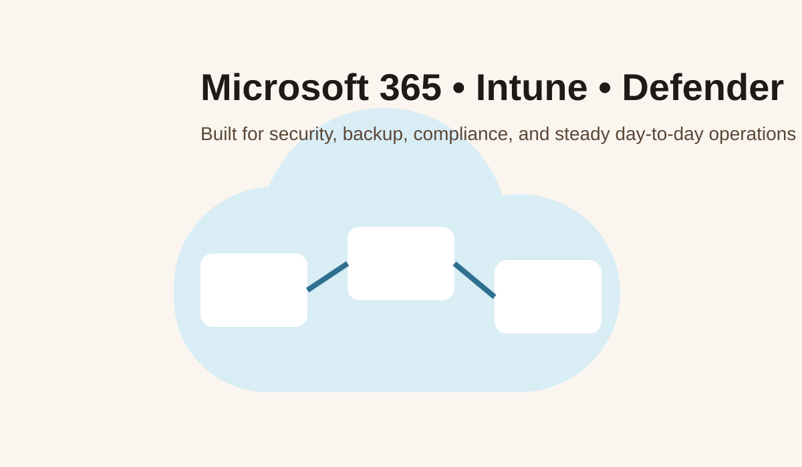

A full service page built to target managed IT, Microsoft 365, cybersecurity, backup, migration, and compliance-related search intent.
Managed IT services should not feel vague. For most businesses in and around Lexington, what they actually need is consistent help with devices, user accounts, patching, security, email, file access, backups, and a realistic path away from older technology that no longer fits. Lazy Dog Computing provides that through a Microsoft 365–centered stack supported by Intune, Defender, Veeam, NinjaOne, and Tenable tools.
We are not trying to turn every environment into a massive enterprise deployment. We are trying to give local businesses a cleaner, safer, easier-to-manage environment that helps them get work done with fewer interruptions.

This page is designed to help the site rank for phrases such as managed IT services Lexington NC, MSP Lexington NC, IT company Lexington NC, and local IT support for businesses. The content also helps search engines understand that the site covers related service clusters rather than one narrow offering.
Tenant structure, licensing cleanup, user access, SharePoint, OneDrive, Teams, and general cloud modernization all start here.
We use Defender, Intune, and Microsoft identity controls to improve the baseline. We use Tenable and Nessus to help identify where risk still exists.
Veeam helps protect business data and support recovery conversations. NinjaOne helps monitor systems and reduce reactive support noise.
Many small businesses in Lexington and the surrounding area still operate with older file servers, legacy email setups, or partially configured cloud systems. We help move businesses from those environments into a best-in-class Microsoft 365 setup that is easier to secure and easier to support.
That might include migrating away from on-prem file shares, modernizing identity and MFA practices, moving from another platform into Microsoft 365, or enrolling devices into Intune for the first time.
Security is not just about installing software. It is about knowing what is configured, what is missing, and how to show your work when a client, partner, or auditor starts asking questions. We help align your Microsoft environment to meet CIS and other regulatory frameworks, and help you gather the evidence required to demonstrate compliance during audits.
That can include configuration review, device compliance reports, vulnerability scan summaries, backup validation discussions, and identity-control documentation.
If you want help with Microsoft 365, security, backup, migration, or compliance support, request more information and tell us where things feel messy right now.